View Certificate

🏢 Organization: Institute of Water Modelling (IWM)
🏷️ Deputation at the International Climate Finance Cell (ICFC), Economic Relations Division (ERD), Ministry of Finance, Government of Bangladesh.
📍 Dhaka, Bangladesh · 🗓️ Dec 2024 – May 2025
🗓️ December 18-19, 2024
📍 Pan Pacific Sonargaon, Dhaka

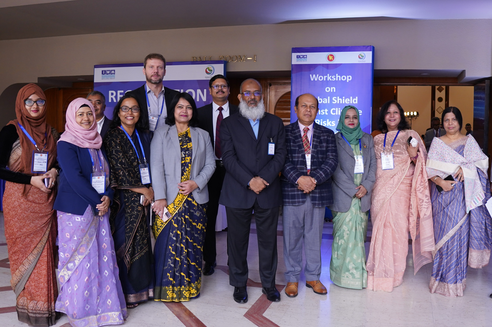

• Initiate the In-Country Process: introduce the Global Shield against Climate Risks and their processes to key stakeholders in Bangladesh.
• Understand Bangladesh’s strategies and priorities for climate & disaster risk financing, existing coordination mechanisms, and interlinkages between ongoing activities.
• Initiate the stocktake and gap analysis, including risk analytics and financial protection gaps.
🗓️ 28–29 May 2025.
📍 Hotel Amari, Dhaka
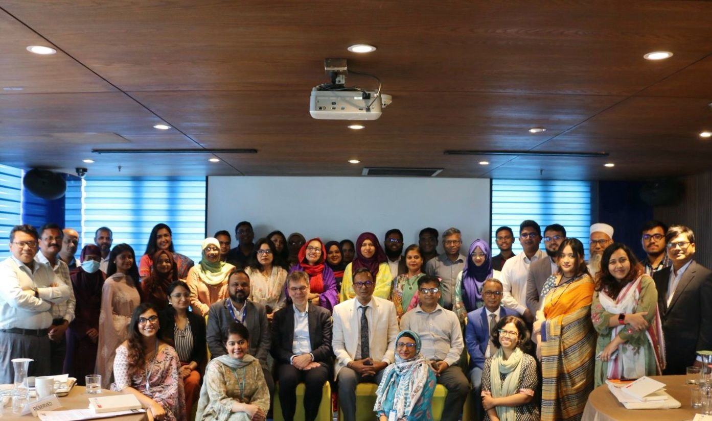
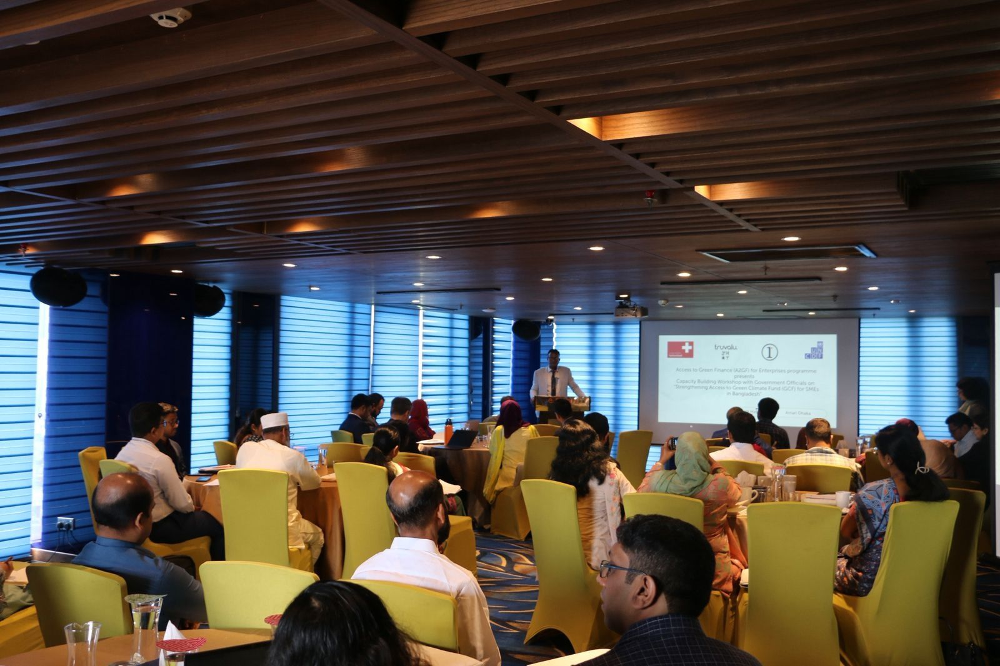
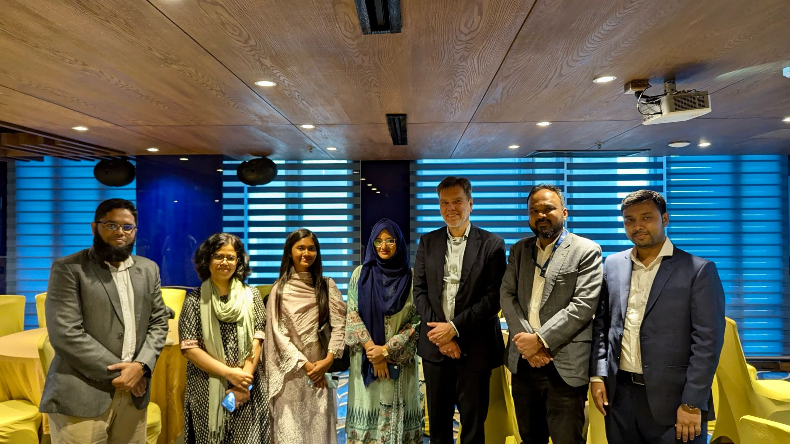
• Enhance NDA and DEA’s understanding of GCF’s structure, policies, and funding mechanisms.
• Build capacity in developing and reviewing high-quality concept notes and technical proposals for GCF funding by sharing best practices.
• Strengthen government stakeholders' capacity to access and utilise GCF resources effectively and increase their access to SMEs for the green transition.
• Discuss challenges and common bottlenecks for DAEs to access GCF with case studies and how to overcome them.
• Present preliminary recommendations and strategies to improve access to the Green Climate Fund (GCF) and facilitate discussions on additional actions needed to strengthen SME access to climate finance in Bangladesh.
🗓️ 9 April 2025.
📍 Planning Commission Campus
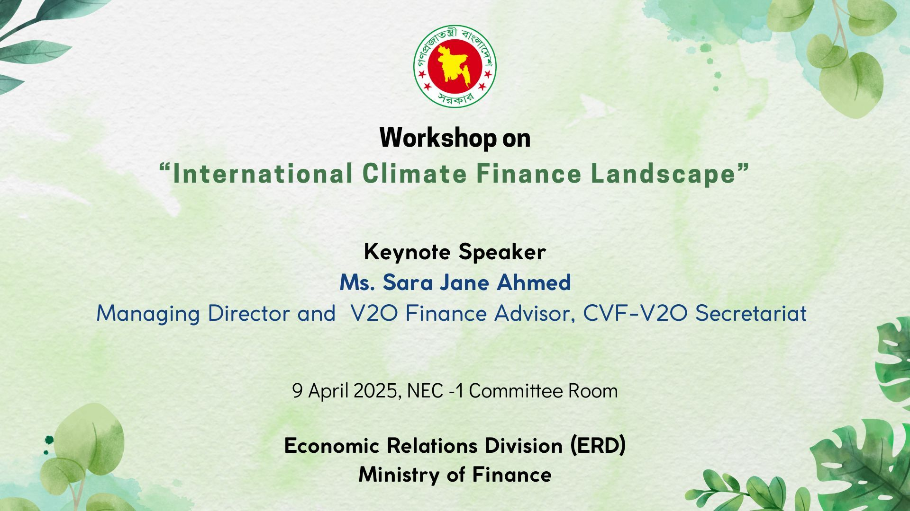
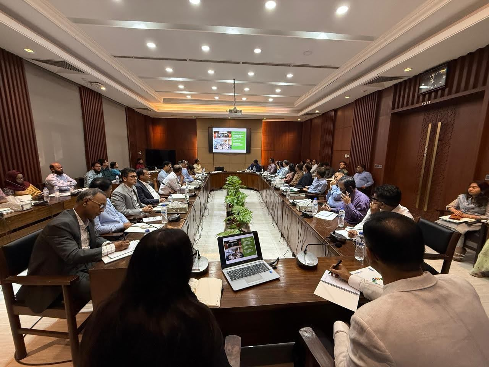
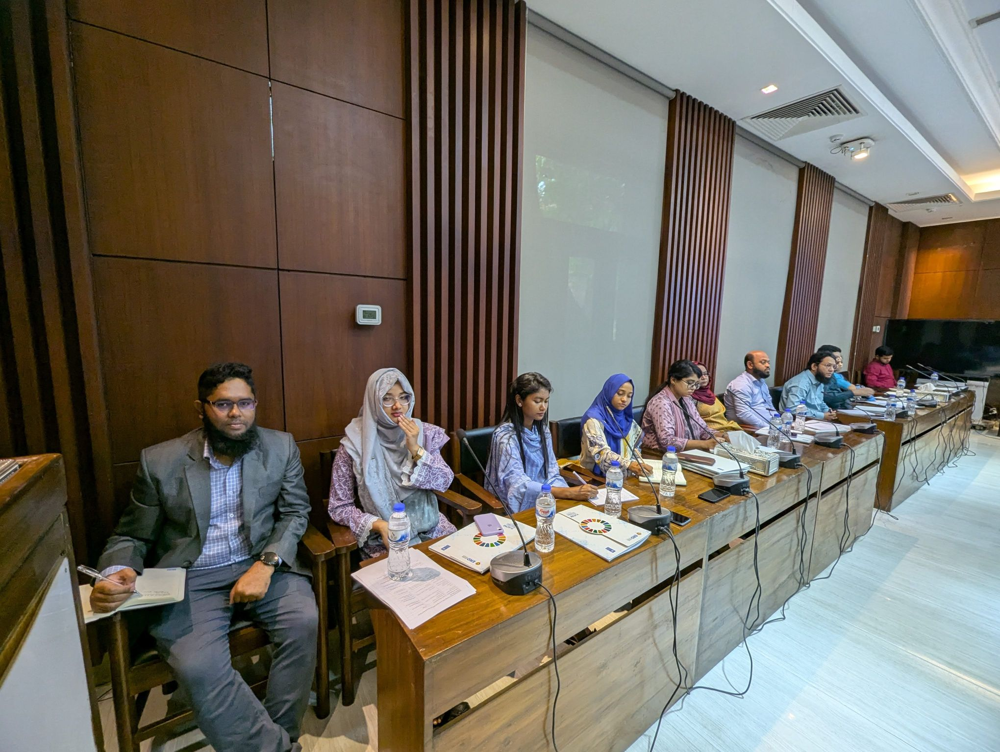
• To provide comprehensive understanding of global climate finance architecture and its implications for Bangladesh.
🗓️ 14 May 2025.
📍 Planning Commission Campus
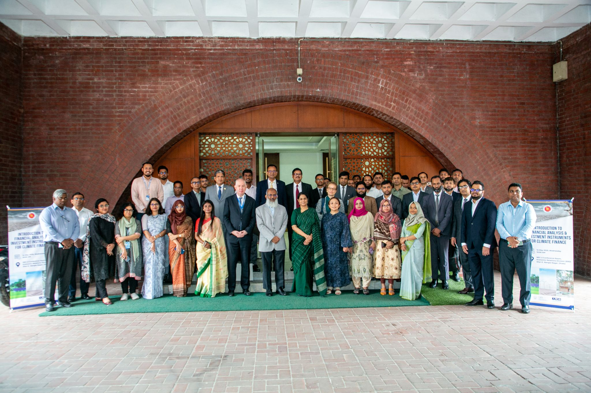
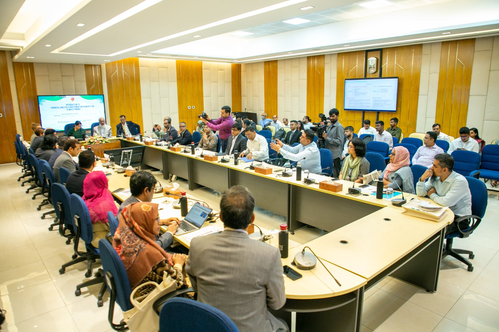
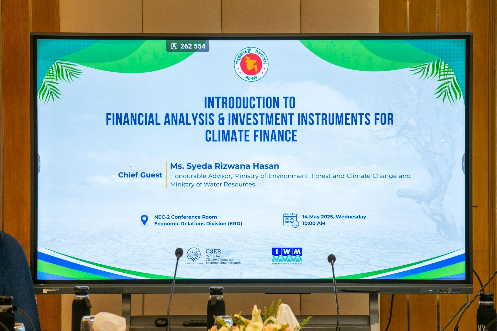
🗓️ 23 March 2025.
📍 Planning Commission Campus
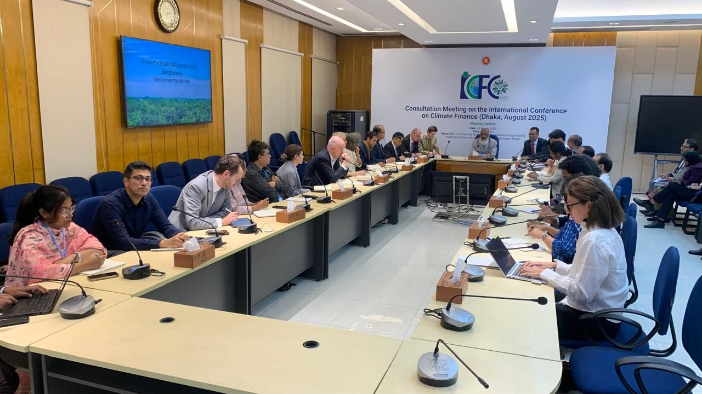
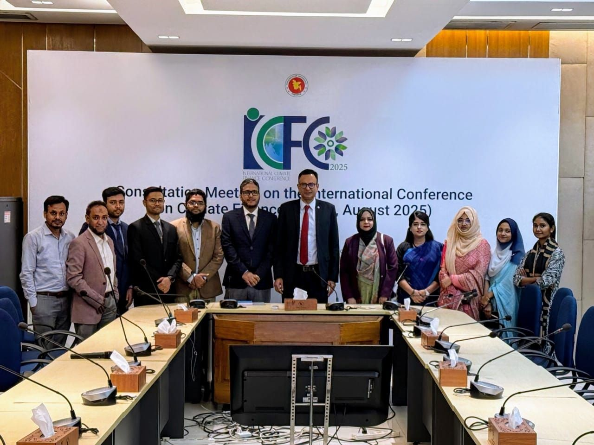